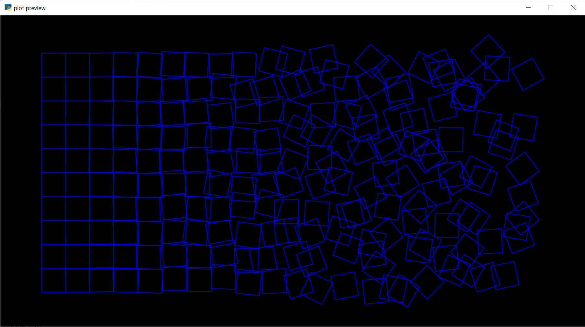
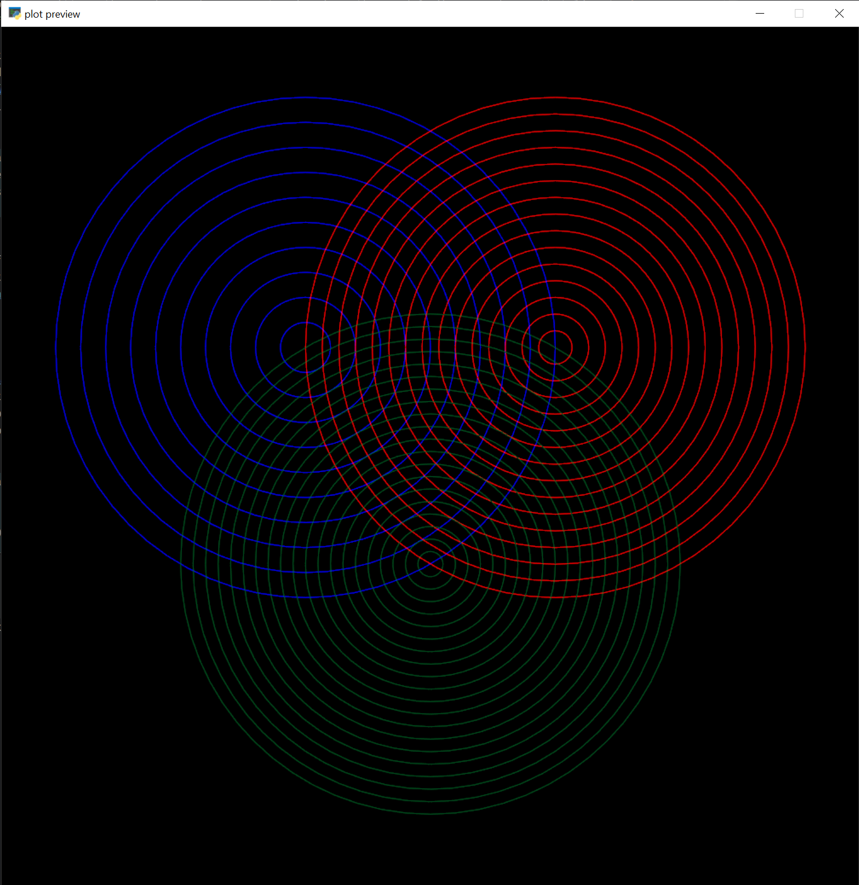
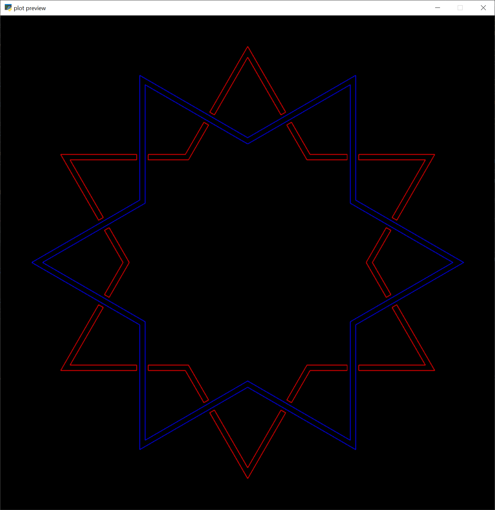

Examples
All examples can be found in the examples module. For each example, click the link in the header to see the code on github.
Schotter

This is a famous early instance of generative art by the artist Geog Nees, and the code demonstrates a lot of the techniques that I use all the time when making art.
-
In the example as written, the random number generator is given the seed 0. You can change that line to
rng = np.random.defaut_rng()if you want distinct outputs every time you run the program. -
In works with multiple instances of similar repeated shapes, I'll create a single shape and then in a loop create transformed duplicates using shapely's affine transformation functions. For a simple example, below is how I'd create a list of five squares of size 1 next to each other with a gap of 0.2 between them.
-
When I was first composing the image, having the amount of random offset increase linearly across the page made things look too chaotic too fast - I wanted the left side of the page to stay more orderly for longer. So I used a sine ease-in to have the coefficient of chaos rise slowly on the left and faster towards the right.
-
Inside the
schotterfunction, I collected a bunch of squares in a list that I calledshapes. At the very end of the function, I usedshapely.union_allto merge them together into a singleMultiLineString. Because all the contents of theshapeslist are 1D lines, I also could alternately have passed the list into the constructor forMultiLineString. In the example below,combined_0andcombined_1will look identical when plotted. I likeunion_allbetter personally, but I have no reason why I like it better. 🤷♀️ -
At the very end, I print the metrics before and after optimization
This serves no practical purpose, it just demonstrates that the optimize function is in fact doing something. You can see that the distance the pen travels while in contact with the page increased slightly, but the pen up distance decreased dramatically, as did the number of distinct paths. When we set the tolerance ofprint(elkplot.metrics(drawing)) # 1496 paths, pen down: 486.52 inch, pen up: 237.02 inch drawing = elkplot.optimize(drawing, 0.01) print(elkplot.metrics(drawing)) # 88 paths, pen down: 486.61 inch, pen up: 82.14 inchoptimizeto 0.01 we were allowingoptimizeto insert extra lines between the ends of paths that are less than a hundredth of an inch apart connecting them and preventing us from having to lift the pen between the two paths, which explains the decrease in the number of paths. The reduction in the pen up distance is mostly due to re-ordering the paths - by drawing paths that are close to each other sequentially we can prevent the pen from criss-crossing all over the page while in the air, dramatically decreasing plot times.
Multi-Layer Plotting

In this example, three images are combined in
a shapely.GeometryCollection.
The draw function interprets these three elements as different layers. When plotted, elkplot
will draw the first layer (the blue circles in the preview) and then return to home position and pause, so you can swap
out the pen. It will prompt you to press enter when you're ready and then it'll plot the second layer (red in the
preview) and then the same process for the third (green in the preview)
Note that because shapely.GeometryCollection is still a shapely geometry, a lot of our functions for manipulating
shapes can still be used. For example, scale_to_fit.
circles = shapely.GeometryCollection([left_circles, right_circles, top_circles])
circles = elkplot.scale_to_fit(circles, *size, margin)
Set Theoretic Construction

Set theoretic construction is building
shapes out of polygons by merging them with union and using polygons to cut away at other polygons
with shapely.difference and shapely.intersection. Normally we deal in shapely.LineStrings
and shapely.MultiLineStrings when making art for a plotter because it only actually draws one-dimensional lines.
However, in this context we want to use shapely.Polygon because the interior of the shapes is relevant. (The
intersection of two polygons is another polygon. The intersection of two linestrings is just the set of points where
those linestrings cross each other.)
In this example, a single shape is created, and then the rest of the composition is created by using affine
transformations and the union and difference functions.
@elkplot.UNITS.wraps(None, ("inch", "inch", "inch"), False)
def overlapping_star(x: float, y: float, r: float) -> shapely.GeometryCollection:
triangle = shapely.Polygon(
[
(x + r * np.cos(theta), y + r * np.sin(theta))
for theta in np.linspace(0, 2 * np.pi, 3, endpoint=False)
]
)
# Create a star by merging two triangles that point in opposite directions
star_poly = triangle.union(
affinity.rotate(triangle, np.pi, use_radians=True, origin="centroid")
)
# Reduce that star to a ribbon around the edge by cutting away a smaller version of the same
top_star_ribbon = star_poly.difference(
affinity.scale(star_poly, 0.95, 0.95, origin="centroid")
)
# Make a second star that is a rotated version of the first one
bottom_star_ribbon = affinity.rotate(
top_star_ribbon, np.pi / 6, use_radians=True, origin="centroid"
)
# Cut away the parts of the second star that are covered up by the first one, plus a little wiggle room
bottom_star_ribbon = bottom_star_ribbon.difference(top_star_ribbon.buffer(0.05))
return shapely.GeometryCollection([top_star_ribbon, bottom_star_ribbon])
Also worth noting about that function,
the pint.wraps
decorator allows the function to take as input floating point numbers (which will be assumed to be in inches) or any
pint Quantity object, which will be converted into inches. This allows us to use whatever units we want when the
function is called and not worry about consistency in the body of the function. (elkplot.UNITS is
a UnitRegistry that is
instantiated in the library.)